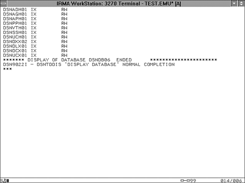

|
|
< Day Day Up > |
|
Information-Gathering CommandsThe information-gathering DB2 environment commands can be used to monitor DB2 objects and resources. They can return the status of DB2 databases, threads, utilities, and traces, as well as monitor the Resource Limit Facility and distributed data locations. The DISPLAY command is used for information gathering. A description of each of the eight forms of the DISPLAY command follows:
Information-Gathering Command GuidelinesUse the following guidelines when issuing commands to gather information about DB2 and its environment. Use the LIMIT Option to Increase the Amount of Displayed InformationUse the LIMIT parameter of the DISPLAY DATABASE command to view database object lists greater than 50 lines long. The default number of lines returned by the DISPLAY command is 50, but the LIMIT parameter can be used to set the maximum number of lines returned to any numeric value. Because 50 lines of output usually is not sufficient to view all objects in a medium-size database, the recommendation is to specify the LIMIT parameter as follows: -DISPLAY DATABASE(DSND851A) LIMIT(300) To indicate no limit, you can replace the numeric limit with an asterisk (*). Use DISPLAY BUFFERPOOL to Monitor DB2 Buffer PoolsUse the DISPLAY BUFFERPOOL command to display allocation information for each buffer pool. Refer to the example in Listing 34.2 for details of the information provided by DISPLAY BUFFERPOOL. Listing 34.2. Results of DISPLAY BUFFERPOOL
-DISPLAY BUFFERPOOL (BP0)
DSNB401I < BUFFERPOOL NAME BP0, BUFFERPOOL ID 0, USE COUNT 90
DSNB402I < VIRTUAL BUFFERPOOL SIZE = 2000 BUFFERS
ALLOCATED = 2000 TO BE DELETED = 0
IN USE/UPDATED = 12
DSNB403I < HIPERPOOL SIZE = 100000 BUFFERS, CASTOUT = YES
ALLOCATED = 100000 TO BE DELETED = 0
BACKED BY ES = 91402
DSNB404I < THRESHOLDS -
VP SEQUENTIAL = 80 HP SEQUENTIAL = 80
DEFERRED WRITE = 50 VERTICAL DEFERRED WRT = 10
IOP SEQUENTIAL = 50
DSNB405I < HIPERSPACE NAMES - @001SSOP
DSN9022I < DSNB1CMD '-DISPLAY BUFFERPOOL' NORMAL COMPLETION
Use the DETAIL Parameter for Buffer Pool Tuning InformationTo produce reports detailing buffer pool usage, specify the DETAIL parameter. Using DETAIL(INTERVAL) produces buffer pool usage information since the last execution of DISPLAY BUFFERPOOL. To report on buffer pool usage as of the time it was activated, specify DETAIL(*). Listing 36.3 depicts the type of information provided by the DETAIL option of DISPLAY BUFFERPOOL. Listing 36.3. Results of DISPLAY BUFFERPOOL
-DISPLAY BUFFERPOOL (BP0), DETAIL(INTERVAL)
DSNB401I < BUFFERPOOL NAME BP0, BUFFERPOOL ID 0, USE COUNT 90
DSNB402I < VIRTUAL BUFFERPOOL SIZE = 2000 BUFFERS
ALLOCATED = 2000 TO BE DELETED = 0
IN USE/UPDATED = 12
DSNB403I < HIPERPOOL SIZE = 100000 BUFFERS, CASTOUT = YES
ALLOCATED = 100000 TO BE DELETED = 0
BACKED BY ES = 91402
DSNB404I < THRESHOLDS -
VP SEQUENTIAL = 80 HP SEQUENTIAL = 80
DEFERRED WRITE = 50 VERTICAL DEFERRED WRT = 10
IOP SEQUENTIAL = 50
DSNB405I < HIPERSPACE NAMES - @001SSOP
DSNB409I < INCREMENTAL STATISITCS SINCE 05:43:22 DEC 23, 1993
DSNB411I < RANDOM GETPAGE = 230 SYNC READ I/O ( R) = 180
SEQ. GETPAGE = 610 SYNC READ I/O ( S) = 20
DMTH HIT = 0
DSNB412I < SEQUENTIAL PREFETCH -
REQUESTS = 124 PREFETCH I/O = 10
PAGES READ = 69
DSNB413I < LIST PREFETCH -
REQUESTS = 0 PREFETCH I/O = 0
PAGES READ = 0
DSNB414I < DYNAMIC PREFETCH -
REQUESTS = 0 PREFETCH I/O = 0
PAGES READ = 0
DSNB415I < PREFETCH DISABLED -
NO BUFFER = 0 NO READ ENGINE = 0
DSNB420I < SYSPAGE UPDATES = 0 SYS PAGES WRITTEN = 0
ASYNC WRITE I/O = 0 SYNC WRITE I/O = 0
DSNB421I < DWT HIT = 0 VERTICAL DWT HIT = 0
NO WRITE ENGINE = 0
DSNB430I < HIPERPOOL ACTIVITY (NOT USING ASYNCHRONOUS
DATA MOVER FACILITY) -
SYNC HP READS = 100 SYNC HP WRITES = 120
ASYNC HP READS = 0 ASYNC HP WRITES = 0
READ FAILURES = 0 WRITE FAILURES = 0
DSNB431I < HIPERPOOL ACTIVITY (USING ASYNCHRONOUS
DATA MOVER FACILITY) -
HP READS = 231 HP WRITES = 263
READ FAILURES = 0 WRITE FAILURES = 0
DSNB440I < I/O PARALLEL ACTIVITY -
PARALL REQUEST = 2 DEGRADED PARALL = 0
DSN9022I < DSNB1CMD '-DISPLAY BUFFERPOOL' NORMAL COMPLETION
This report can be used to augment buffer pool tuning. Suggested action items are as follows:
Use the LIST and LSTATS Parameters for Additional DetailFor additional buffer pool information, the LIST and LSTATS parameters can be specified:
Use LIST, DBNAME, and SPACENAM to Limit InformationSpecifying LIST(*) causes DB2 to display all open index spaces and table spaces for the given buffer pool, whether they are currently in use or not. This option can be used in conjunction with the DBNAME and SPACENAM parameters to display only those specific data sets you are interested in reviewing; for example -DISPLAY BUFFERPOOL(BP0) LIST(*) DBNAME(DSNDB06) SPACENAM(SYSP*) This statement causes only DB2 Catalog table spaces that start with the characters "SYSP" to be displayed. This should display only SYSPLAN and SYSPKAGE. Use CASTOWNR and GBPDEP for Group Buffer Pool DetailIn a data sharing environment you will need to monitor DB2's usage of group buffer pools. Use the GBPDEP parameter to display only those data sets that are group buffer pool (GPB) dependent. An index space or table space is GBP-dependent if inter-DB2 R/W interest exists in it or changed pages from the object exist in the group buffer pool that have not yet been written to disk. Additionally, you can use the CASTOWNR parameter to restrict the display to just those data sets for which this DB2 member is the castout owner. Use DISPLAY LOG to Monitor DB2 LoggingUse the DISPLAY LOG command to display information about the number of logs, their current capacity, the setting of LOGLOAD, and which logs require offloading. Refer to the example in Listing 36.4 for details of the information provided by DISPLAY LOG. Listing 36.4. Results of DISPLAY LOG-DIS LOG DSNJ370I - DSNJCOOA LOG DISPLAY | CURRENT COPY1 LOG = DSNC610.LOGCOPY1.DS03 IS 22% FULL | CURRENT COPY2 LOG = DSNC610.LOGCOPY2.DS03 IS 22% FULL | H/W RBA = 0000039A9F24, LOGLOAD = 150000 | FULL LOGS TO OFFLOAD = 2 OF 6, OFFLOAD TASK IS (BUSY,ALLC) | DSNJ371I - DB2 RESTARTED 14:06:23 OCTOBER 22, 2003 | RESTART RBA 0000039A8000 | DSN9002I - DSNJC001 'DIS LOG' NORMAL COMPLETION Use DISPLAY DATABASE to Monitor DB2 ObjectsUse the DISPLAY DATABASE command to monitor the status of table spaces and indexes. The possible status values follow. When a status other than RO or RW is encountered, the object is in an indeterminate state or is being processed by a DB2 utility. Use DISPLAY DATABASE to View Restricted ObjectsBy specifying the RESTRICT option on the DISPLAY DATABASE command, only restricted DB2 objects are listed. A database is considered restricted if it is in one of the following states:
A table space or index is considered restricted if it is in one of the following states:
Use the RESTRICT option to ascertain whether any objects require action to restore them to a useable state. The ADVISORY option can also be used with DISPLAY DATABASE. Specifying the ADVISORY option on the DISPLAY DATABASE command causes the display to show DB2 objects where read-write access is allowed, but an action needs to be taken on the object. The ICOPY and AUXW statuses are considered ADVISORY states. Finally, you can use the AREST option to identify objects in an advisory restart pending state. Use DISPLAY DATABASE to View Objects Being UsedBy specifying the ACTIVE option of the DISPLAY DATABASE command, only table spaces and indexes that have been allocated for use by an application are listed. Use the ACTIVE option to determine the currently allocated objects. Use DISPLAY DATABASE to Determine Database UsageThe USE option of the DISPLAY DATABASE command displays information on how the database is being used. It returns information on the applications and subsystems to which the database is allocated, the connection IDs, correlation IDs, and authorization IDs for all applications allocated to the displayed table spaces and the LUWID and location of remote threads accessing the database. Use DISPLAY DATABASE to View Locking InformationTwo options of the DISPLAY DATABASE command, LOCKS and CLAIMERS, can be used to view locking details for the database and its associated table spaces. The LOCKS clause displays the applications and subsystems having locks held, waited on, or retained for the specified database as well as the transaction locks for all table spaces, tables, index spaces, and table space partitions being displayed. It will also show drain locks held by running jobs. The CLAIMERS clause displays the claims on all table spaces, index spaces, and table space partitions whose status is displayed. If the CLAIMERS clause is specified, it overrides both the LOCKS and USE clauses. Use DISPLAY DATABASE to View the Logical Page ListPages that are logically in error are written to a special list known as the logical page list (LPL). A logical page error is one that can be corrected without redefining physical devices, for example, caused by a connection problem. The LPL clause can be specified on the DISPLAY DATABASE command to view the logical page errors for the database, table space, or partition. Starting or recovering the object in question can clear logical page errors. NOTE If starting the object with the LPL error does not work, DB2 will upgrade the failure to a physical failure. If this occurs, the object must be recovered. Simplify the DISPLAY Output Using OVERVIEWConsider specifying the OVERVIEW parameter on your DISPLAY command to display each object in the database on its own line. This causes the output to be limited to only the space names and space types that exist in the specified databases. The number of parts will be displayed for any partitioned table spaces and index spaces. The OVERVIEW keyword cannot be specified with any other parameters or keywords except for SPACENAM, LIMIT, and AFTER. Use Wildcards to View Multiple DatabasesDISPLAY DATABASE can use the asterisk as a wildcard specifier in the operand portion of the command. Consider the following command: -DISPLAY DATABASE (DSN8*) This command lists only the databases that contain the DSN8 characters as the first four characters in their name—the sample database. Use ONLY to Display Database Information Without Related ObjectsNormally, the DISPLAY DATABASE command will display information about a database and all of its associated table spaces and indexes. You can use the ONLY option without the SPACENAM() keyword to display information about the database, but not the table spaces and indexes in the database. Use DISPLAY PROCEDURE to Monitor Stored Procedure StatisticsThe display command can be used to monitor the status of stored procedures. This command will show
Use DISPLAY FUNCTION SPECIFIC to Monitor UDF StatisticsThe display command can be used to monitor the status of stored procedures. This command displays one output line for each function that a DB2 application has accessed.
Understand the Stored Procedure and UDF StatusWhen displaying information about stored procedures and UDFs using the DISPLAY PROCEDURE and DISPLAY FUNCTION SPECIFIC commands, a status is returned indicating the state of the procedure or UDF. A procedure or UDF can be in one of four potential states:
Use DISPLAY UTILITY to Monitor DB2 UtilitiesThe DISPLAY UTILITY command can be used to monitor the progress of an active utility. By monitoring the current phase of the utility and matching this information with the utility phase information, you can determine the relative progress of the utility as it processes. For example, if the DISPLAY UTILITY command indicates that the current phase of a LOAD utility is the REPORT phase, you know that there is only one more phase and that seven phases have been processed. CAUTION The IBM service aid and sample programs will not appear in the DISPLAY UTILITY output. Many third-party utilities do not show up when -DIS UTIL is issued if they run outside the scope of DB2. Use the display tool provided by the third-party vendor instead. Use DISPLAY UTILITY to Gauge a Utility's ProgressFor the DB2 COPY, REORG, and RUNSTATS utilities, the DISPLAY UTILITY also can be used to monitor the progress of particular phases. The COUNT specified for each phase lists the number of pages that have been loaded, unloaded, copied, or read. The REORG utility in Figure 36.3 is in the RELOAD phase and has processed nine records. COUNT = nnn indicates that nnn pages have been unloaded by the REORG utility in the UNLOAD phase. By comparing this number to the number of pages for the table space as found in the NACTIVE column of SYSIBM.SYSTABLESPACE, you can track the progress of the following phases: Figure 36.3. DISPLAY UTILITY output.
NOTE You also can check the progress of the CHECK, LOAD, RECOVER, and MERGE utilities using -DIS UTIL. The number of rows, index entries, or pages that have been processed are displayed. Centralize DISPLAY CapabilityA centralized area in your organization should have the capability to issue all the information-gathering commands online to effectively administer the DB2 subsystem. This centralized area should be staffed such that support is available when DB2 applications, queries, or utilities are being processed. Be Wary of the Dynamic Nature of Displayed InformationThe information returned by the DISPLAY command is dynamic. As the information is displayed, it may also be changing, making the displayed information inaccurate. Therefore, do not rely solely on information issued by the DISPLAY command unless it can be verified from another source or by multiple executions of the same DISPLAY command. Other sources for verification include online performance monitors and calling end users. Usually, a combination of sources should be consulted before taking any action based on information returned from the DISPLAY command. |
|
|
< Day Day Up > |
|